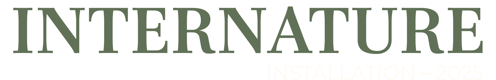
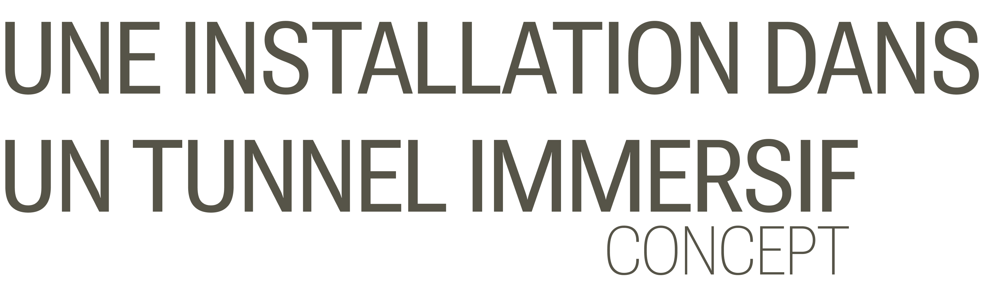
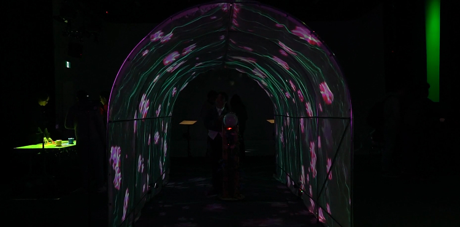
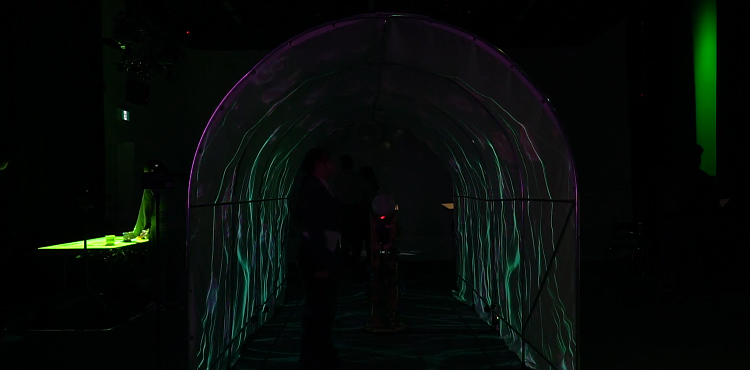
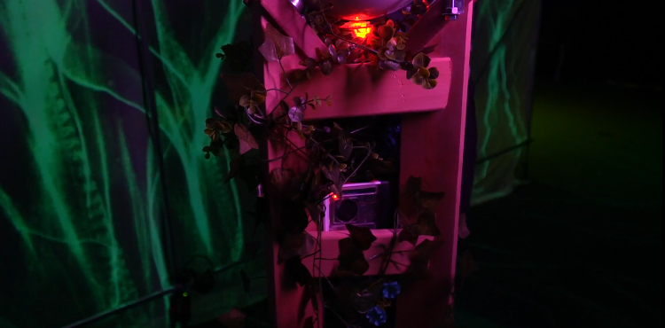
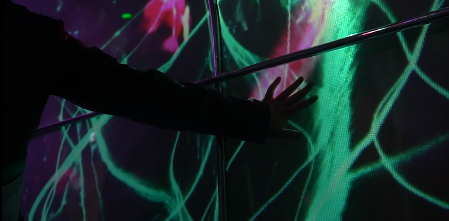
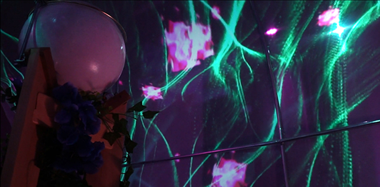
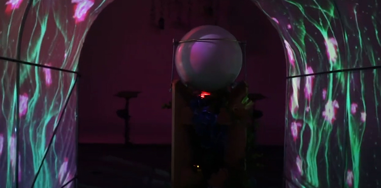
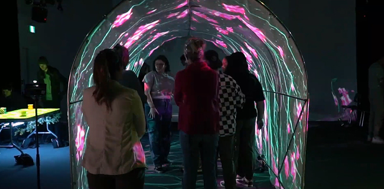
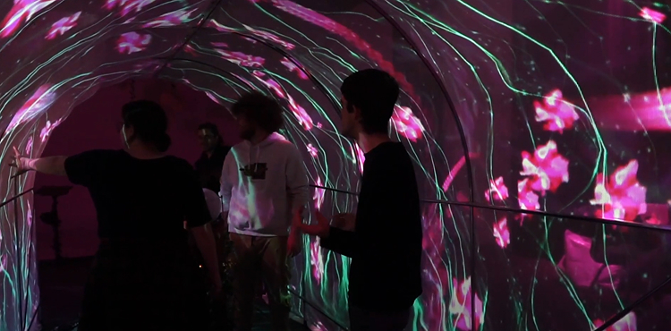

voir le projetType de travail
Projection
Mapping video
Installation
Applications
Madmapper
Reaper
Touchdesigner
Competences techniques
Branchement fil
Mapping video
Art numerique/interactive
Type de projet

voir le projetType de travail
Applications
Competences techniques
Type de projet

Internature est un tunnel immersif qui intègre le mapping vidéo interactif sur ses parois accompagné d'une musique ambiante et des bruitages afin de vraiment submerger l'utilisateur dans un environnement de nature synthétique. Au cœur de cet environnement, l’utilisateur est invité à interagir avec une boule pour embellir l'environnement, déclenchant finalement un spectacle de lumière dynamique intéractif au toucher et l’amenant à réfléchir sur l’impact de l’être humain sur celle-ci.
Installation sol
Branchement










Réaliser par
Appreciation pour
Encadré par
Gros merci aux ttps
Une intéraction immersive dans un tunnel comportant des projections et du mapping vidéo sur les parois, accompagnée de musique d'ambiance et de sons immersifs. Les participants sont invités à s'approcher d'une boule. En tournant la sphère, il y aura un déclenchement d'un visuel unique.